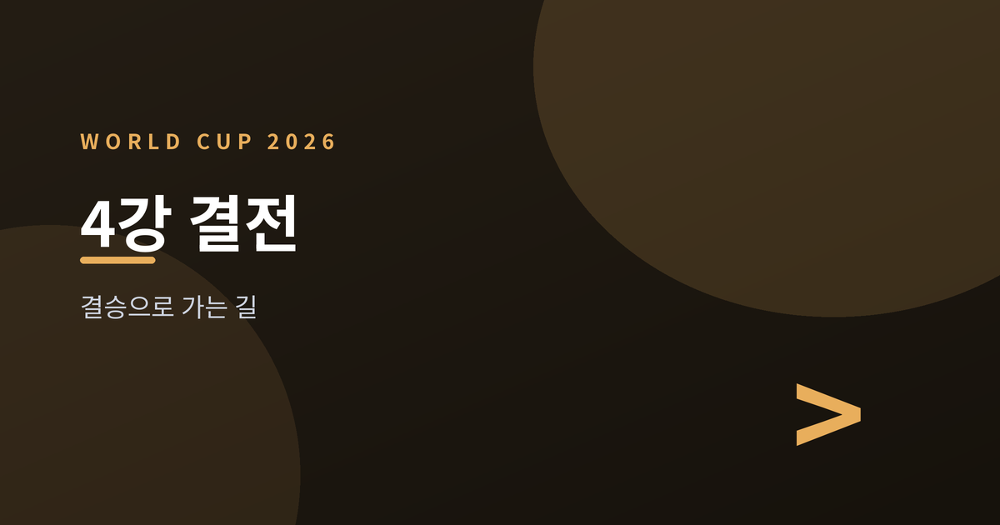
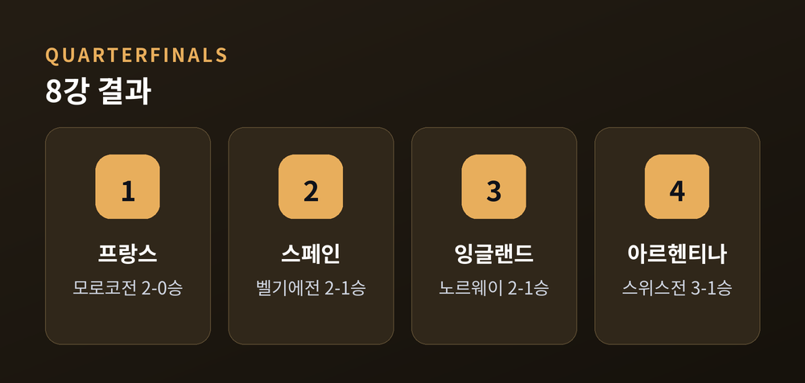
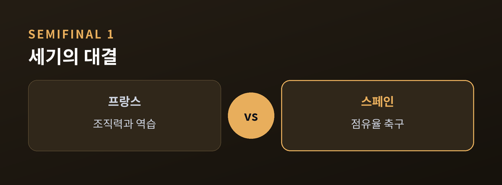
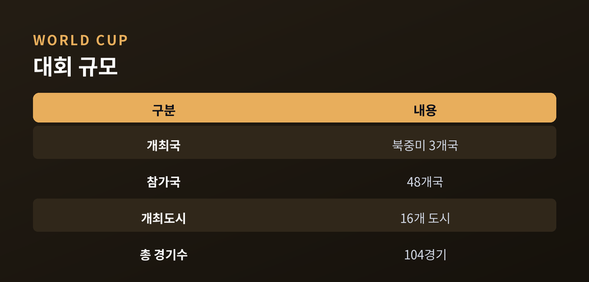
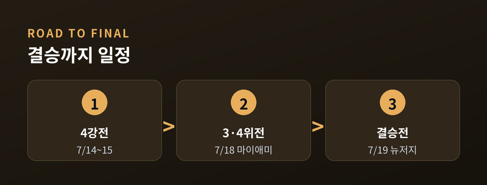

결승을 향한 길

2026 FIFA 월드컵이 4강에 접어들었습니다. 미국·캐나다·멕시코 3개국이 공동 개최하는 이번 대회는 48개국이 출전한 첫 확장판 월드컵입니다. 8강전을 모두 통과한 프랑스, 스페인, 잉글랜드, 아르헨티나가 결승행 티켓을 놓고 격돌합니다.
네 나라 모두 대회 전부터 우승 후보로 꼽혀온 팀들입니다. 이변 없는 4강 구성이라는 평가가 나오는 이유입니다. 지금부터 대진 배경과 관전 포인트, 대회가 갖는 의미를 짚어보겠습니다.
이달 초 이어진 8강전에서 프랑스는 모로코를 2-0으로 눌렀습니다. 스페인은 벨기에를 상대로 2-1 접전 끝에 승리했습니다. 전반 파비안 루이스가 선제골을 넣었고 벨기에가 곧바로 동점골로 맞섰지만, 후반 종료 직전 미켈 메리노가 결승골을 터뜨렸습니다.
잉글랜드와 아르헨티나는 상대적으로 더 힘든 길을 걸었습니다. 잉글랜드는 노르웨이를 상대로 연장 접전을 벌인 끝에 2-1로 이겼습니다. 주장 주드 벨링엄이 혼자 두 골을 넣으며 팀을 구했습니다. 아르헨티나는 스위스를 3-1로 제압했는데, 상대가 한 명이 퇴장당해 열 명으로 싸운 경기였습니다. 알렉시스 마크 알리스터가 골을 보탰고, 리오넬 메시가 여전히 경기의 흐름을 만들었습니다.
네 팀 모두 이번 대회 전 FIFA 랭킹 상위권에 자리했던 나라들입니다. 강팀들이 순리대로 살아남았다는 인상을 주는 대진표입니다.

준결승 1차전은 프랑스와 스페인의 대결입니다. 현지시간 7월 14일, 한국시간으로는 7월 15일 새벽에 텍사스주 댈러스의 AT&T 스타디움에서 열립니다. 두 팀 모두 우승 후보 1순위로 꼽혀온 만큼 벌써부터 '결승을 미리 보는 경기'라는 평가가 나옵니다. 프랑스는 탄탄한 조직력과 빠른 역습을, 스페인은 짧은 패스로 상대를 압박하는 점유율 축구를 앞세웁니다.
준결승 2차전은 잉글랜드와 아르헨티나의 맞대결입니다. 현지시간 7월 15일, 한국시간 7월 16일 새벽에 조지아주 애틀랜타의 메르세데스-벤츠 스타디움에서 벌어집니다. 벨링엄을 앞세운 잉글랜드와, 디펜딩 챔피언 자격으로 나선 아르헨티나의 대결입니다. 두 나라는 1986년 월드컵부터 이어져 온 오랜 축구 라이벌이기도 합니다. 이번 대결에는 세대교체를 이끄는 젊은 잉글랜드와, 노장 메시를 앞세워 우승을 지키려는 아르헨티나의 구도가 겹칩니다.
4강에 오른 네 팀은 모두 대회 시작 전부터 우승 후보로 꼽혔던 나라들입니다. 이변 없는 4강이라는 평가가 나오는 배경입니다.

이번 대회는 여러 면에서 기록을 새로 쓰고 있습니다. 우선 참가국이 기존 32개국에서 48개국으로 늘었습니다. 개최국인 미국, 캐나다, 멕시코가 자동 출전권을 얻었고, 나머지 45개국은 2년에 걸친 대륙별 예선을 통과했습니다.
경기장도 세 나라에 걸쳐 있습니다. 미국 11개 도시, 멕시코 3개 도시, 캐나다 2개 도시, 모두 16개 도시가 경기를 나눠 치릅니다. 조별리그도 기존 8개 조에서 12개 조로 늘었습니다. 각 조 1, 2위와 성적이 좋은 3위 8개 팀이 32강에 올라가는 방식입니다. 여기에 32강부터 결승까지 토너먼트가 이어지면서, 이번 대회 전체 경기 수는 104경기에 이릅니다. 대회 기간도 39일로, 역대 월드컵 중 가장 깁니다.
세 나라가 함께 개최하는 것도 이번이 처음입니다. 규모가 커진 만큼 축구 변방으로 여겨졌던 나라들에도 본선 진출 기회가 넓어졌다는 평가가 나옵니다. 동시에 경기 일정이 늘어나면서 선수단 체력 관리가 새로운 과제로 떠올랐다는 지적도 있습니다.

이제 남은 일정은 셋뿐입니다. 준결승 두 경기가 끝나면 패자들은 7월 18일 미국 마이애미의 하드록 스타디움에서 3·4위 결정전을 치릅니다. 결승전은 7월 19일, 뉴저지주의 메트라이프 스타디움에서 열립니다. 한국시간으로는 7월 20일 새벽에 해당합니다.
프랑스와 스페인, 잉글랜드와 아르헨티나 모두 우승 경험이 있는 나라들입니다. 그만큼 어느 쪽이 결승에 올라가도 무게감 있는 대진이 될 전망입니다. 아직 두 경기가 남은 만큼, 결과를 섣불리 예단하기는 이릅니다. 다만 한 가지는 분명합니다. 48개국이 출전한 첫 확장 월드컵의 결승 무대에는, 이번 대회를 상징할 만한 팀이 오르게 될 것입니다.
경기는 아직 끝나지 않았습니다. 결승까지 남은 이틀, 그리고 일주일을 차분히 지켜볼 시점입니다.

참고 소스